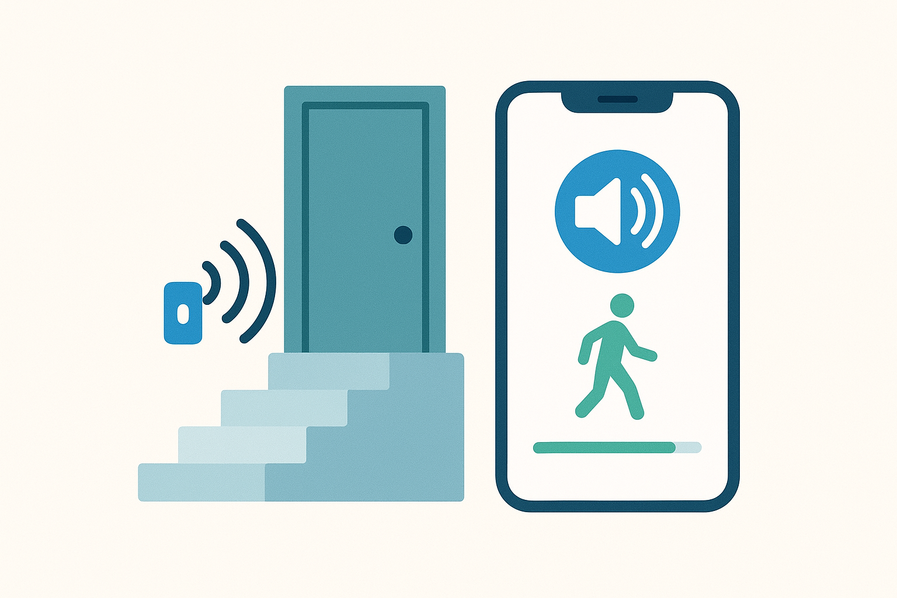
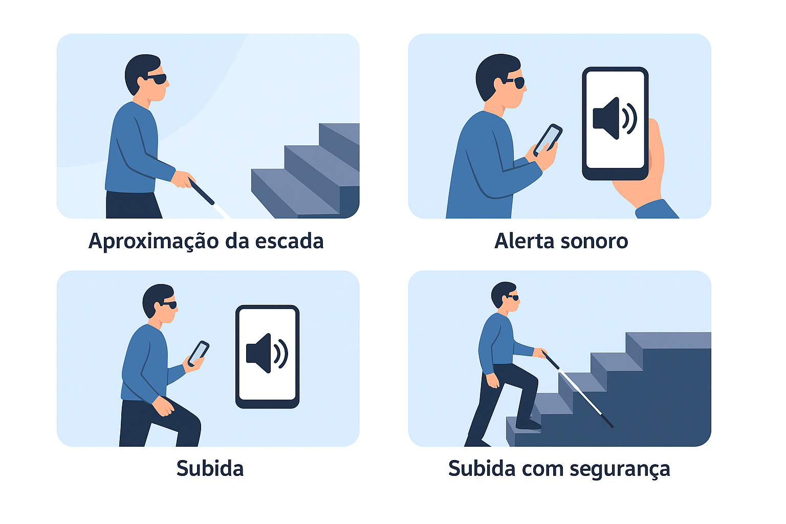

Detecção
O sensor identifica a proximidade de escadas, portas e outros pontos relevantes.
O GUIAVOZ conecta sensores e aplicativo para oferecer alertas por voz, vibração e som a pessoas com deficiência visual.
O GUIAVOZ é um projeto acadêmico de tecnologia assistiva que busca facilitar a mobilidade de pessoas com deficiência visual em universidades, hospitais e outros ambientes internos.
Sensores instalados em pontos estratégicos comunicam-se com o aplicativo, que transforma as informações recebidas em avisos simples e objetivos.

O funcionamento do GUIAVOZ acontece em quatro etapas integradas.
O sensor identifica a proximidade de escadas, portas e outros pontos relevantes.
As informações são enviadas ao aplicativo por meio de uma conexão Bluetooth.
O aplicativo comunica o risco por voz, som ou vibração, conforme a preferência.
O usuário recebe uma indicação objetiva para continuar o trajeto com segurança.
O aplicativo permite adaptar os alertas às necessidades de cada usuário.
Mensagens faladas descrevem o ponto de atenção detectado.
Uma alternativa discreta para locais públicos ou ambientes silenciosos.
Sinais objetivos reforçam a percepção de obstáculos próximos.
Interface clara, botões grandes e suporte ao leitor de tela.
O projeto busca contribuir para uma rotina com mais confiança, independência e inclusão.
Recursos adaptados para diferentes formas de percepção.
Menor dependência de terceiros em trajetos internos.
Alertas antecipados para pontos que exigem atenção.
Conheça o fluxo de uso do projeto em um cenário acadêmico.

Acompanhe o desenvolvimento, consulte a documentação ou entre em contato para colaborar.